第7章 排序
7.1 直接插入排序
7.1.1 直接插入排序的思想
直接插入排序算法的定义：按照待排序序列中元素的先后顺序，每次将待排序序列中的一个元素插入到已经排好序的序列中，直到待排序序列中所有的元素都插入到有序序列中。直接插入排序最关键的步骤是找到待排序序列中的元素在有序序列中的插入位置。在查找元素插入位置的过程中需要进行多次元素大小的比较以及多次元素的向后移动。
下面通过1个简单的例子了解直接插入排序算法的执行过程，有1个数组，数组中元素的顺序为{23，18，20，22}，需要按照从小到大排序。红色表示已经排好序的元素，黑色表示未排好序的元素。初始情况下有序序列中只有1个元素23，一个数字肯定是有序的，不需要进行插入排序。第一轮排序往有序序列{23}中插入18，令key = 18，因为key<23，23后移1位，23移动到下标1的位置，key插入在下标0的位置，本轮排序结束之后有序序列变为{18，23}，无序序列变为{20，22}，如图7.1.1.1所示。
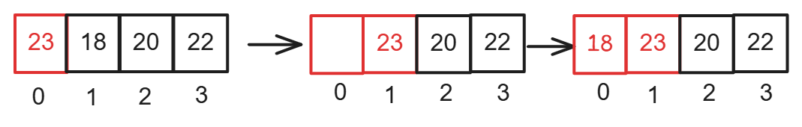
图7.1.1.1
第二轮排序往有序序列{18，23}中插入20，令key = 20，因为key<23，23后移1位，23移动到下标2的位置，因为key>18，因此20插入在下标1的位置。本轮结束之后有序序列变为{18，20，23}，无序序列变为{22}，如图7.1.1.2所示。
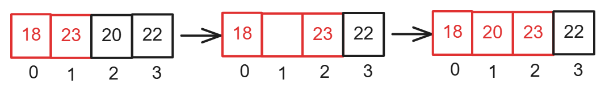
图7.1.1.2
第三轮排序往有序序列{18，20，23}中插入22，令key = 22，因为key<23，23后移1位，23移动到下标3的位置，因为key>20，因此22插入在下标2的位置。本轮结束之后有序序列变为{18，20，22，23}，无序序列为空，到此直接插入排序完成，如图7.1.1.3所示。
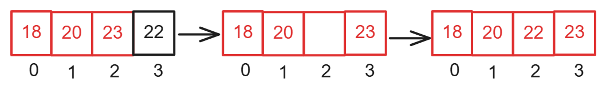
图7.1.1.3
7.1.2 直接插入排序的实现
如图7.1.2.1所示，往有序序列{3，6，8，9}中插入7，令key=7，i指向当前往有序序列中插入的元素7，j指向有序序列中的元素，j的初始值是 i-1，也就是说初始情况下 j 指向有序序列中最后1个元素。
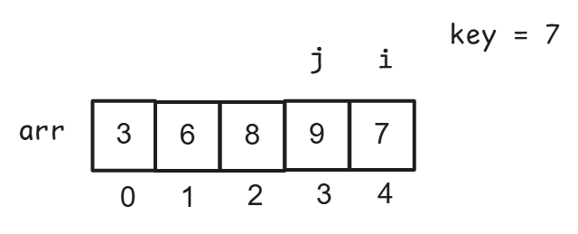
图7.1.2.1
因为arr[ j ]>key，所以arr[ j ]向后移动1个位置，arr[ j ]移动到下标4的位置，则arr[ j+1 ] = arr[ j ]，arr[4] = 9，j--，j向前移动1个位置，j指向下标为2的位置，如图7.1.2.2所示。
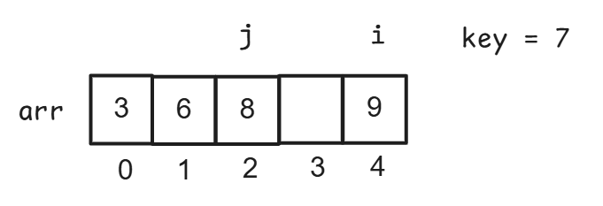
图7.1.2.2
因为arr[ j ] > key，所以arr[ j ]向后移动1个位置，arr[ j ]移动到下标为3的位置，则arr[ j+1 ] = arr[ j ]，arr[3] = 8，j--，j向前移动1个位置，j指向下标为1的位置，如图7.1.2.3所示。
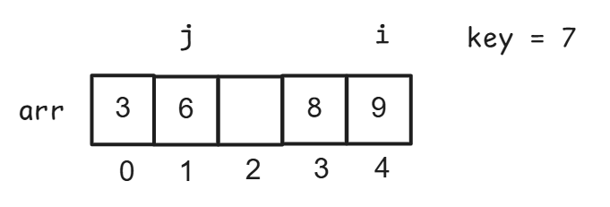
图7.1.2.3
因为arr[ j ]<key，说明key的插入位置找到了，key插入在下标j+1的位置，arr[ j+1 ] =key，arr[ 2 ] = 7，如图7.1.2.4所示。
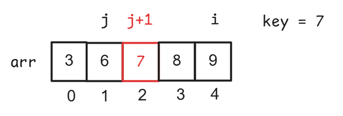
图7.1.2.4
下面还举1个例子，如图7.1.2.5所示，往有序序列{1，2}中插入0，令key=0，i指向当前往有序序列中插入的元素0，j指向有序序列中的元素，j的初始值是i-1，也就是说初始情况下j指向有序序列中最后1个元素。
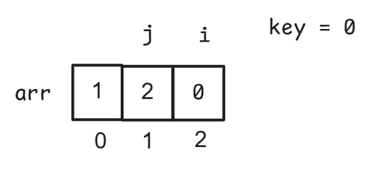
图7.1.2.5
因为arr[ j ]>key，所以arr[ j ]向后移动1个位置，arr[ j ]移动到下标为2的位置，则arr[ j+1 ] = arr[ j ]，arr[2] = 2，j - -，j向前移动1个位置，j指向下标为0的位置，如图7.1.2.6所示。
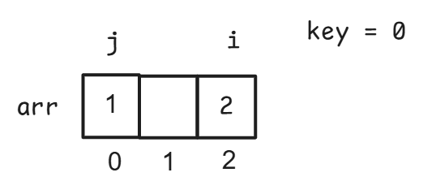
图7.1.2.6
因为arr[ j ]>key，所以arr[ j ]向后移动1个位置，arr[ j ]移动到下标1的位置，则arr[ j+1 ] = arr[ j ]，arr[1] = 1，j - -，j向前移动1个位置，j指向下标为-1的位置。到此while循环结束。while循环结束的条件为 j == -1，因此while循环的条件需要设置为 j>=0。
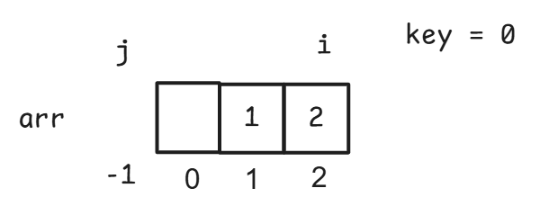
图7.1.2.7
此时j==-1，说明key的插入位置找到了，在下标 j+1的位置即下标0的位置插入key，arr[ j+1] = key，arr[ 0 ] =0。如图7.1.2.8所示。
图7.1.2.8
由以上的讲解可知：直接插入排序需要经过多趟移动和大小比较，因此需要定义1个while循环，在while循环中进行元素的移动和大小比较，如果arr[ j ]>key，则arr[ j ]向后移动1个位置，j--，j向前移动1个位置。如果arr[ j ]<key，说明key的插入位置找到了，key需要插入在下标j+1的位置，此时while循环结束。因此while循环条件设置为arr[ j ]>key。while循环结束之后在下标 j+1的位置插入key。即arr[ j+1] = key。另外还需要注意while循环条件中需要加上 j >=0，因为当 j == -1时 j>=0不成立while循环结束，说明key的插入位置找到了，此时key插入在下标 j+1的位置也就是下标0的位置。最外层还需要写一个for循环，从待排序数组中下标为1的元素开始进行直接插入排序，下标为0的元素不需要进行直接插入排序，因为当序列中只有1个元素时肯定是有序的。直接插入排序代码如下：
void InsertSort(int arr[],int n){ //i是当前往有序序列中插入的元素的下标 int i; //j是有序序列中元素的下标 int j; //用key保存当前往有序序列中插入的元素 int key; /*定义for循环对下标为1~(n-1)的元素进行直接插入排序，n是待排序数组中元素的个数，将各元素插入已排好序的序列中。 第一个元素不需要进行直接插入排序，因为单个元素肯定是有序的因此i的下标从1开始。*/ for(i=1;i<n;i++){ //用key记录当前往有序序列中插入的元素 key = arr[i]; //j的初始值是有序序列中最后1个元素的下标 j = i -1; /*如果arr[j]>key，则arr[j]向后移动1个位置，j--，j向前移动1个位置。*/ while(j>=0 && arr[j]>key){ arr[j+1] = arr[j]; j--; } /*如果arr[j]<key，此时while循环结束。说明key的插入位置找到了，key需要插入在下标j+1的位置，while循环结束之后在下标j+1的位置插入key。*/ /*如果j==-1则j>=0不成立，此时while循环结束，key插入在下标j+1的位置即下标0的位置*/ arr[j+1] =key; }} 7.2 折半插入排序
7.2.1 折半插入排序的思想
下面通过1个例子介绍一下折半插入排序的执行过程。有1个有序序列为{10 ，25 ，30 ，35 ，40， 42} ，需要在这个有序序列中插入元素26。红色代表已经排好序的元素。初始情况下，low = 0，high = 5，mid =（0+5）/2 =2 ，R[mid] = 30 26 < R[mid]，26插入在mid的左边，high = mid -1 = 1，继续在区间[0,1]查找插入位置。如图7.2.1.1所示。
图7.2.1.1
如图7.2.1.2所示，low = 0，high = 1，mid =（0+1）/2 =0 ，R[mid] = 10 ， 26 > R[mid]，26插入在mid的右边，low = mid +1 = 1，继续在区间[1,1]查找插入位置。
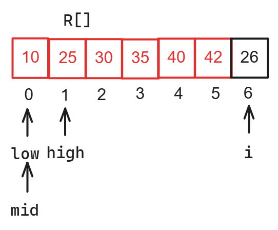
图7.2.1.2
如图7.2.1.3所示，low = 1，high = 1，mid =（1+1）/2 =1，R[mid] = 25， 26 > R[mid]，26插入在mid的右边，low = mid +1 = 2。
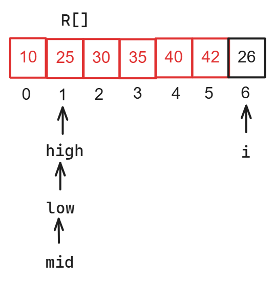
图7.2.1.3
如图7.2.1.4所示，low = 2，high = 1，low > high折半查找结束。将区间[low,i-1]中每个元素向后移动1个位置。在low指向的位置插入元素26。
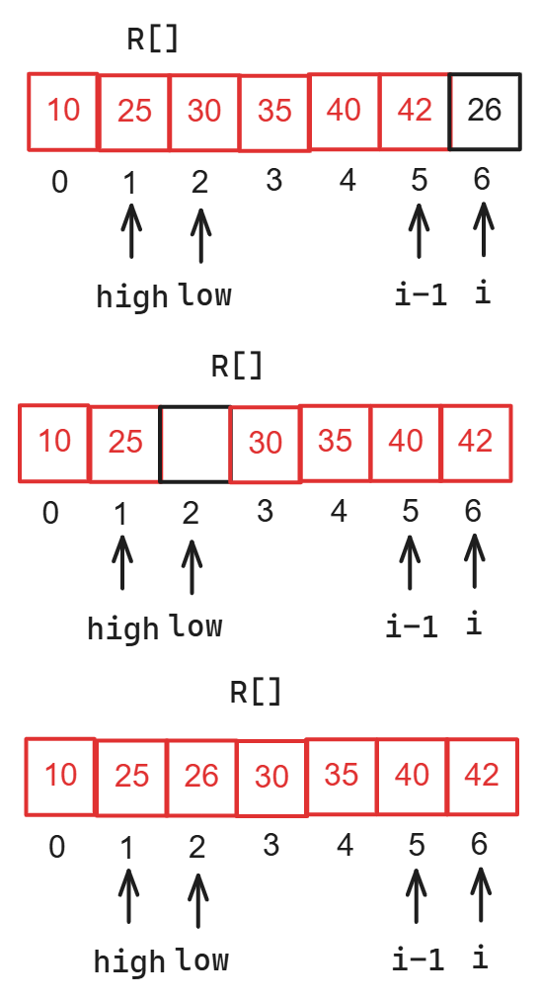
图7.2.1.4
折半插入排序和直接插入排序类似，都是在一个已经排好序的序列中插入一个新元素。区别是查找插入位置的方法不同，折半插入排序是通过折半查找来确定元素的插入位置。假设在一个有序序列中插入一个新的元素的下标是i。当low > high时折半查找结束，需要先将区间[low，i-1]中的元素向后移动1个位置，然后在low所指向的位置插入新元素。
如图7.2.1.5所示。在有序序列10,25,30,35,40,42中插入元素30，红色代表已经排好序的元素，low = 0，high = 5，mid =（0+5）/2 =2 ，R[mid] = 30 ， 30 == R[mid]。如果插入的元素等于mid指向的元素，则将新插入的元素插入在mid的右边。30插入在mid的右边，low = mid +1 = 3，继续在区间[3,5]查找插入位置。
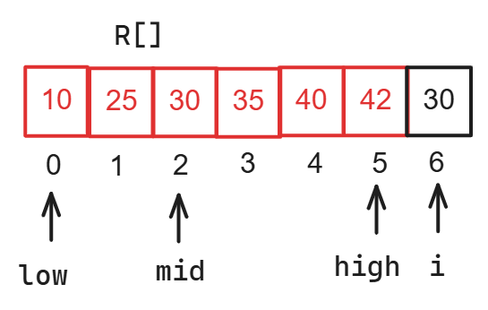
图7.2.1.5
如图7.2.1.6所示，low = 3，high = 5，mid =（3+5）/2 =4 R[mid] = 40 30 < R[mid]，30插入在mid左边的区间，high = mid -1 = 3，继续在区间[3,3]查找插入位置。
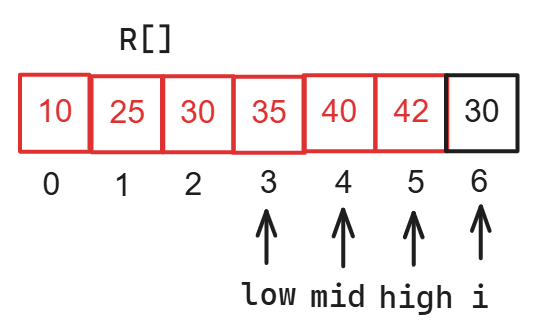
图7.2.1.6
如图7.2.1.7所示，low = 3，high = 3，mid =（3+3）/2 =3 R[mid] = 35 30 < R[mid]，30插入在mid的左边，high = mid -1 = 2。
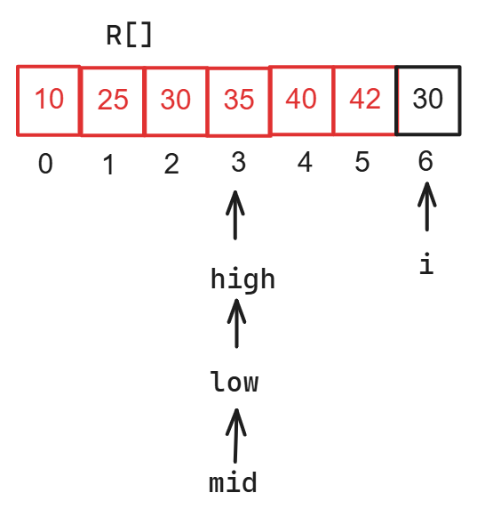
图7.2.1.7
如图7.2.1.8所示，low = 3，high = 2，low > high折半查找结束，将区间[low,i-1]中每个元素向后移动1个位置。在low所指向的位置插入30。
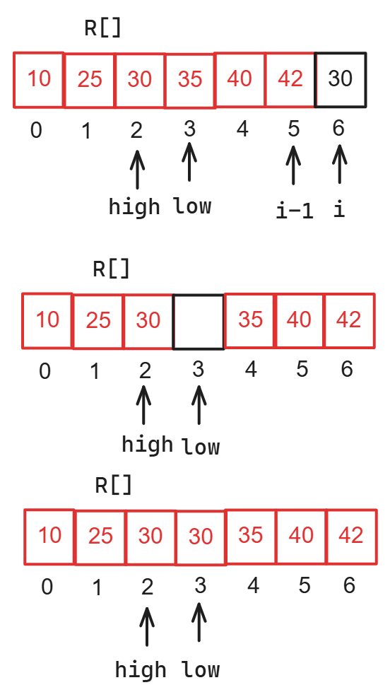
图7.2.1.8
7.2.2 折半插入排序的实现
折半插入排序代码如下所示：
xxxxxxxxxx//定义折半插入排序函数，n保存数组R[]中元素的个数，R[]是待排序数组void InsertSort(int R[],int n){ //在一个有序序列中插入一个新的元素的下标是i int i; //j保存当前已经排好序的元素的下标 int j; //mid记录查找区间的中间位置 int mid; //low保存折半查找区间的开始下标 int low; //high保存折半查找区间的结束下标 int high; //temp保存当前需要进行插入排序的元素的值 int temp; //定义for循环对下标为1~(n-1)的元素进行插入排序，将各元素插入已排好序的序列中。 //第一个元素不需要进行插入排序，因为单个元素肯定是有序的 for(i=1;i<n;i++){ //用temp保存当前进行插入排序的元素 temp = R[i]; //low的初始值等于0 low = 0; //high的初始值等于当前需要进行直接插入排序的元素的下标-1 high = i-1; //low > high折半查找结束,low<=high折半查找继续 while(low<=high){ //求查找区间的中间位置 mid = (low+high)/2; //如果temp < R[mid]说明temp在mid左边的区间插入，需要继续在区间[low,mid-1]中继续查找temp的插入位置 if(temp<R[mid]){ high = mid -1; //如果temp >= R[mid]说明temp在mid右边的区间插入，需要继续在区间[mid+1,high]中继续查找temp的插入位置 }else{ low = mid +1; } } //程序执行到这里说明low > high，需要将区间[low,i-1]内每个元素向后移动1个位置 for(j=i-1;j>=low;j--){ R[j+1] =R[j]; } //在下标为low的位置插入元素temp R[low] = temp; }}7.3 希尔排序
7.3.1 希尔排序的思想
希尔排序是改进版的直接插入排序，希尔排序是将一个待排序序列根据增量划分成若干个子序列，然后对每个子序列进行直接插入排序，各子序列排序的结果就是一趟希尔排序的结果。增量是子序列中后一个元素与前一个元素的下标之差。在希尔排序中，增量是逐步递减的。本节中采用希尔自己提出的增量选取方法。第一轮希尔排序，增量d设置为待排序序列中元素个数n / 2，从第二轮希尔排序开始，增量d设置为上一轮希尔排序增量d / 2，直至d = 1时，增量d不再递减 。当d = 1时，由于后一个元素与前一个元素下标之差为1，此时不需要划分序列，对整个序列进行直接插入排序。此时希尔排序完成。
对序列{51,40,68,98,72,16,30,53}进行希尔排序，序列中元素的个数n = 8 ，如图7.3.1.1所示。
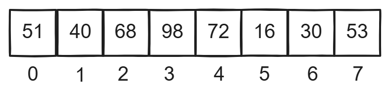
图7.3.1.1
（1）第一轮希尔排序，增量d = 8 / 2 = 4，通过增量4将原序列划分成4个子序列，子序列中后一个元素与前一个元素的下标之差是4，并对各子序列进行直接插入排序，如图7.3.1.2所示。增量的个数等于子序列的个数。
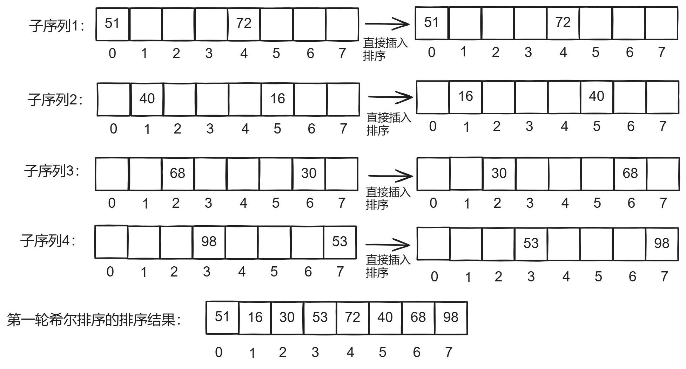
图7.3.1.2
（2）第二轮希尔排序，增量d = 4 / 2 = 2，通过增量2将第一轮希尔排序的结果划分成两个序列，子序列中后一个元素与前一个元素的下标之差是2，并对各子序列进行直接插入排序，如图7.3.1.3所示。增量的个数等于子序列的个数。
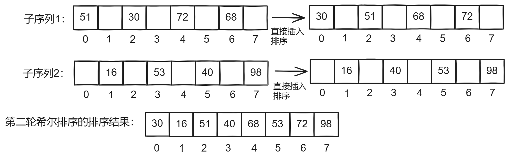
图7.3.1.3
（3）第三轮希尔排序，增量d = 2 / 2 = 1，无需划分序列，并对第二轮希尔排序的结果进行直接插入排序。如图7.3.1.4所示。增量的个数等于子序列的个数。
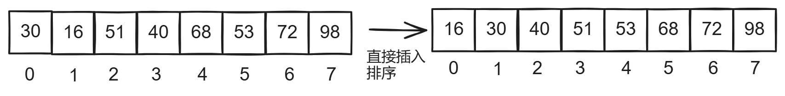
xxxxxxxxxx图7.3.1.4
希尔排序的每一轮排序会让序列变得更加有序，当进行最后一轮希尔排序前，序列已经基本有序了，此时无需分割序列对整个序列进行一次直接插入排序。希尔排序通过对直接插入排序的改进，让排序效率更高。
7.3.2 希尔排序的实现
希尔排序的代码使用了三重for循环，最外层的for循环控制增量的变化，第二层for循环控制子序列中第一个元素下标的变化，第三个for循环控制子序列中元素下标的变化。在第三个for循环中对子序列进行直接插入排序。
希尔排序的代码如下所示：
xxxxxxxxxx//定义希尔排序函数，n保存数组R[]中元素的个数，数组R是待排序数组void ShellSort(int R[],int n){ //i是当前往有序序列中插入的新元素的下标 int i; //j是有序序列中元素的下标 int j; //temp保存当前往有序序列中插入的新元素的值 int temp; //d保存当前的增量 int d; //k保存子序列中第一个元素的下标 int k; //最外层的for循环控制增量的变化，增量的初始值是数组元素个数/2 //每次for循环将增量缩小一半，d的最小值是1 for(d=n/2;d>=1;d=d/2){ /*下面这个for循环控制子序列中第一个元素下标的变化，k是子序列中第一个元素的下标，每一轮排序将原序列划分成d个子序列，最后一个子序列中第一个元素的下标为d-1，子序列中第一个元素的下标k是递增的，for循环的条件设置为 k < d */ for(k=0;k<d;k++){ /*下面这个for循环对子序列进行直接插入排序，因为序列中单个元素肯定有序，子序列中第一个元素不需要进行直接插入排序，从第二个元素开始插入排序，因此i的初始值设置为子序列中第二个元素的下标(k+d)，下面这个for循环对各子序列进行直接插入排序，元素下标i的最大值为n-1，因此设置i<n。子序列中后一个元素与前一个元素的下标之差为增量d，因此设置i+=d*/ for(i=k+d;i<n;i+=d){ //用temp记录当前往有序序列中插入的元素 temp= R[i]; //j的初始值是有序序列中最后1个元素的下标 j = i-1; //如果arr[j]>key，则arr[j]向后移动1个位置，j--，j向前移动1个位置。 while(j>=0 && R[j]>temp){ R[j+1] = R[j]; j--; } /*如果arr[j]<key，此时while循环结束。说明key的插入位置找到了，key需要插入在下标j+1的位置，while循环结束之后在下标j+1的位置插入key。*/ /*如果j==-1则j>=0不成立，此时while循环结束，key插入在下标j+1的位置即下标0的位置*/ R[j+1] =temp; } } }} 7.4 冒泡排序
7.4.1 冒泡排序的思想
冒泡排序属于交换排序，如果按照从小到大的顺序排序，第一轮排序需要从前往后依次比较相邻元素的大小，如果前面的元素比后面的元素要大，则需要交换相邻元素的位置。第一趟排序结束之后，序列中最大的元素移动到最后面。此时序列中最大的元素添加到有序序列中。序列中其他的元素依旧是无序的。每一趟冒泡排序结束之后，有序序列中都会增加1个元素。冒泡排序仅对无序序列中的相邻元素比较大小。经过多趟这样的排序，直到序列中所有的元素都加入有序序列为止。如图7.4.1.1中的数组，按照从小到大排序，用红色代表有序序列中的元素，用绿色代表交换位置的元素。
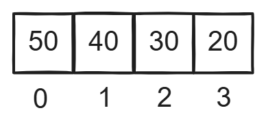
图7.4.1.1
第一轮冒泡排序：无序序列是50 40 30 20 ，只需对无序序列中的相邻元素比较大小。 （1）0号元素和1号元素比较大小，因为50 > 40，50和40交换位置，排序结果为：
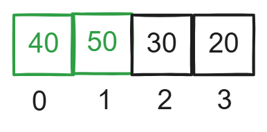
图7.4.1.2
（2）1号元素和2号元素比较大小，因为50 > 30，50和30交换位置，排序结果为：
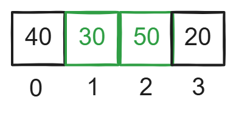
xxxxxxxxxx图7.4.1.3
（3）2号元素和3号元素比较大小，因为50 > 20，20和50交换位置，排序结果为：
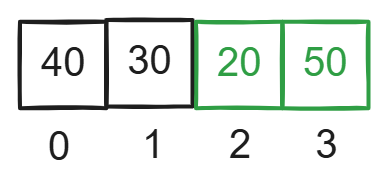
图7.4.1.4
第一轮冒泡排序结束，无序序列50 40 30 20中的最大值50移动到最后面 ，此时有序序列变为50，无序序列是40 30 20 ，排序结果为：
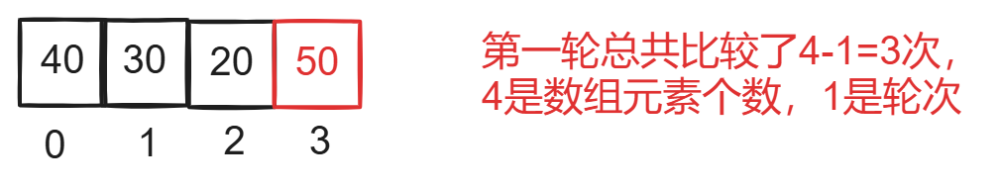
图7.4.1.5
第二轮冒泡排序：无序序列是40 30 20 ，只需对无序序列中的相邻元素比较大小。 （1）0号元素和1号元素比较大小，因为40 > 30，30和40交换位置，排序结果为：
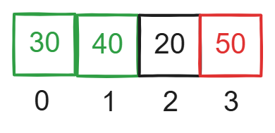
图7.4.1.6
（2）1号元素和2号元素比较大小，因为40 > 20，40和20交换位置，排序结果为：
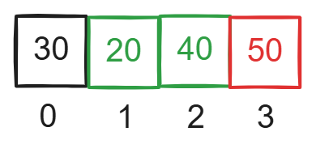
图7.4.1.7
第二轮冒泡排序结束，无序序列40 30 20中的最大值40移动到最后面， 此时有序序列变为40 50，无序序列为30 20，排序结果为：
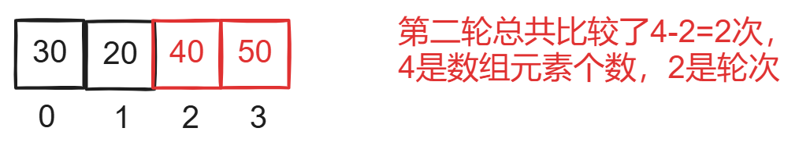
图7.4.1.8
第三轮冒泡排序：无序序列为30 20，只需对无序序列中的相邻元素比较大小 （1）0号元素和1号元素比较大小，因为30 > 20，30和20交换位置，排序结果为：
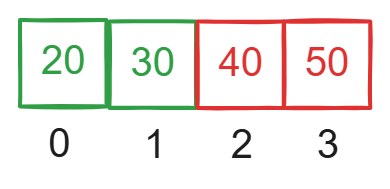
图7.4.1.9
第三轮冒泡排序结束，无序序列30 20中的最大值30移动到最后面， 此时有序序列变为20 30 40 50，无序序列为空，冒泡排序结束，排序结果为：
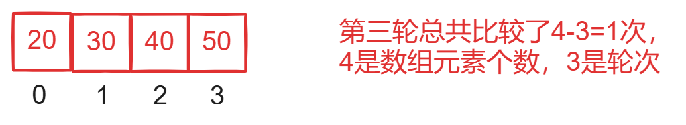
图7.4.1.10
由上面的例子可知：每一轮冒泡排序有序序列中增加1个元素，无序序列中减少1个元素，如果数组中有n个元素，则需要进行n-1轮冒泡排序，每一轮冒泡排序，相邻元素比较的次数 = n - 轮次。
7.4.2 冒泡排序的实现
如图7.4.2.1中的数组，使用冒泡排序算法从小到大排序。用红色表示有序序列中的元素，绿色表示交换位置的元素。
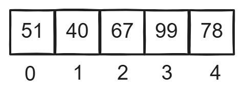
图7.4.2.1
第一趟冒泡排序：无序序列为{51,40,67,99,78} （1）0号元素和1号元素比较大小，因为40 < 51，40和51交换位置，排序结果为：
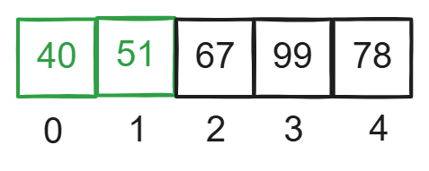
图7.4.2.2
（2）1号元素和2号元素比较大小，因为51< 67，51和67不交换位置，排序结果为：
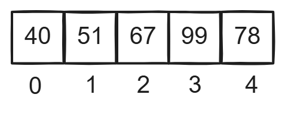
图7.4.2.3
（3）2号元素和3号元素比较大小，因为67 < 99，67和99不交换位置，排序结果为：
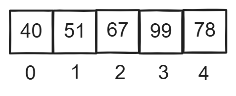
图7.4.2.4
（4）3号元素和4号元素比较大小，因为99 > 78，99和78交换位置，排序结果为：
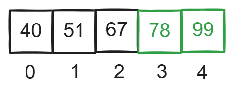
图7.4.2.5
第一轮冒泡排序结束，无序序列{51,40,67,99,78}中的最大值99移动到最后面 ，此时有序序列变为99，排序结果为：
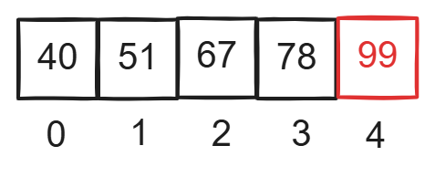
图7.4.2.6
第二轮冒泡排序：无序序列为{40,51,67,78}。
（1）0号元素和1号元素比较大小，因为51 > 40，51和40不交换位置，排序结果为：
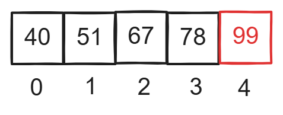
图7.4.2.7
（2）1号元素和2号元素比较大小，因为67 > 51，67和51不交换位置，排序结果为：
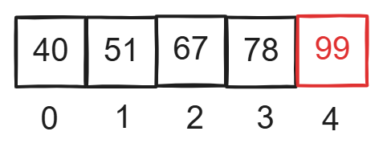
图7.4.2.8
（3）2号元素和3号元素比较大小，因为78 > 67，78和67不交换位置，排序结果为：
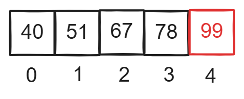
图7.4.2.9
第二轮排序没有交换元素的位置，说明此时序列已经有序，此时冒泡排序结束，排序结果为：
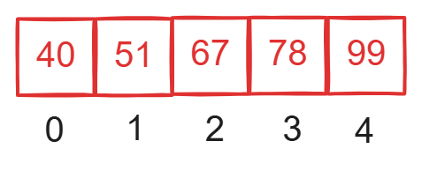
图7.4.2.10
如果在一轮排序中相邻元素没有交换，说明此时序列已经有序，剩下的还没有执行的若干轮排序没有必要执行了。到此冒泡排序结束。
冒泡排序代码如下：
x//定义冒泡排序函数void BubbleSort(int R[],int n){ //i表示冒泡排序第i轮 int i; //j表示相邻元素的下标 int j; //用来交换元素位置的临时变量 int temp; //定义标记flag，flag为0说明这一轮排序元素没有交换位置 //flag为1说明这一轮排序元素有交换位置 int flag; //n是数组元素的个数，冒泡排序最多需要n-1轮排序 //外层for循环控制排序轮次,i表示第i轮 for(i=1;i<=n-1;i++){ //每一轮排序前将flag设置为0 flag = 0; //内层for循环控制每一轮排序相邻元素比较的次数 //每一轮排序相邻元素比较的次数为n-i次 for(j=0;j<n-i;j++){ //比较相邻元素的大小，按照前小后大的规则交换位置 if(R[j] > R[j+1]){ temp = R[j]; R[j] = R[j+1]; R[j+1] = temp; //相邻元素交换位置了，需要将flag标记为1 //flag为1说明这一轮排序元素有交换位置 flag = 1; } } //内层for循环执行完了，说明一轮冒泡排序结束了 /*此时需要判断flag是否为0，如果为0说明这一轮排序没有相邻 元素交换位置，此时说明数组元素已经有序，冒泡排序结束， 后面的若干轮排序不需要执行。 */ if(flag==0){ return; } }}
int main(){ int R[] ={23,46,18,49,24,12}; int len = sizeof(R) / sizeof(int); BubbleSort(R,len); for(int i=0;i < len;i++){ printf("%d ",R[i]); } return 0;}for(i = 1;i <= n-1;i++) 外层for循环控制冒泡排序的总轮次，i表示第i轮，i的初始值要设置为1，表示从第一轮开始。n表示数组元素的个数，n个元素最多需要进行n-1轮排序，所以 i的最大值为 n-1。因此需要设置i<=n-1，比如现在有4个元素需要排序，n =4，则for(i=1;i<=3;i++)，i= 1,2,3，需要进行3轮排序。
for(j = 0;j < n - i;j++){ if(R[ j ] > R[ j+1 ]){ //如果前大后小则交换位置 } 内层for循环控制每一轮冒泡排序相邻元素比较的次数，j与j+1表示相邻元素的下标，内层for循环执行的次数就是相邻元素比较的次数。因为每一轮排序都是从下标0的元素开始比较相邻元素的大小，因此 j 的初始值设置为0，一轮冒泡排序相邻元素需要比较n- i次，因此需要设置j < n- i。 比如现在有4个元素需要排序，第一轮排序内层for循环为for(j=0;j<3;j++)，j = 0,1 2，相邻元素总共需要比较3次，分别是下标为0的元素与下标为1的元素比较，下标为1的元素与下标为2的元素比较，下标为2的元素与下标为3的元素比较。
7.5 快速排序
7.5.1 确定枢轴元素的位置
下面通过1个例子讲解如何通过快速排序确定枢轴元素的位置，如图7.5.1.1所示，low和high分别指向数组的第一个元素和最后一个元素。
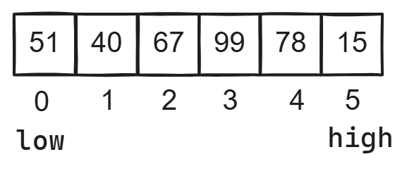
图7.5.1.1
任取图7.5.1.1中的一个元素为枢轴元素。通常取第一个元素为枢轴元素。 如果high指向的元素大于等于枢轴元素，high向左移动1个位置，当high指向的元素小于等于枢轴元素时，high指向的元素复制到low指向的位置。接着开始移动low。
如果low指向的元素小于等于枢轴元素，low向右移动1个位置，当low指向的元素大于等于枢轴元素时，low指向的元素复制到high指向的位置。接着开始移动high。这样做的目的是：让low左边的元素都小于等于枢轴，high右边的元素都大于等于枢轴。当low和high指向同一个位置时，也就是low和high重合时，枢轴的最终位置就确定了，枢轴插入在low和high重合的位置。第一轮快速排序之后，枢轴左边的元素都小于等于枢轴，枢轴右边的元素都大于等于枢轴。
然后对枢轴元素左边的序列和枢轴元素右边的序列进行划分，直到序列中只有1个元素或者没有元素时，递归结束。当序列中只有1个元素或没有元素时，不需要划分序列。重复上述过程，直到整个序列有序为止。
第一轮快速排序：以第一个数51作为枢轴。 （1）定义变量pivot保存枢轴元素51，如图7.5.1.1所示，high指向15，因为15<51，high指向的元素复制到low指向的位置。low指向15，开始移动low。
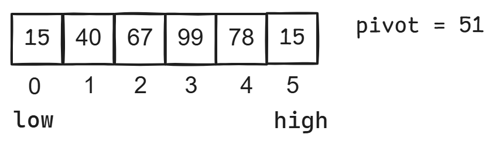
图7.5.1.2
（2）low指向15，15 < 51，low向右移动1个位置，low指向40。
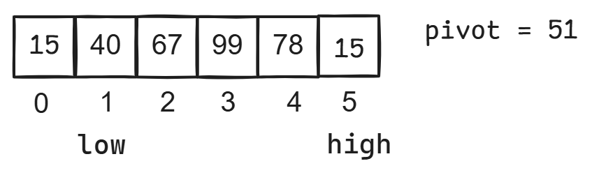
图7.5.1.3
（3）low指向40，因为40 < 51，low向右移动1位，low指向67。
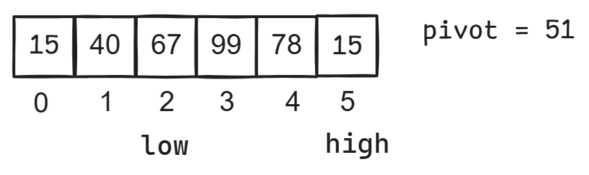
图7.5.1.4
（4）low指向67，因为67 > 51，low指向的元素复制到high指向的位置。high指向67，开始移动high。

图7.5.1.5
（5）high指向67，因为67 > 51，high向左移动1个位置，high指向78。
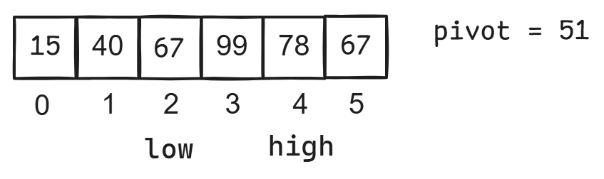
图7.5.1.6
（6）high指向78，因为78 > 51，high向左移动1个位置，high指向99。
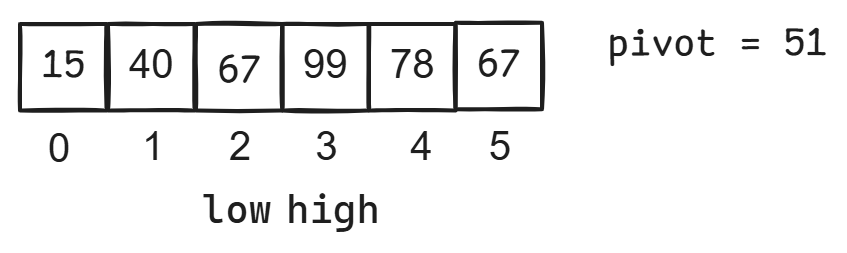
图7.5.1.7
（7）high指向99，因为99 > 51，high向左移动1个位置，high指向下标2的位置，此时high指向的元素67大于枢轴元素51，但是high不能向左移动了，因为high和low指向同一个位置。到此枢轴元素51的位置确定了，在下标2的位置插入枢轴元素51，也就是在high和low重合的位置插入枢轴元素。
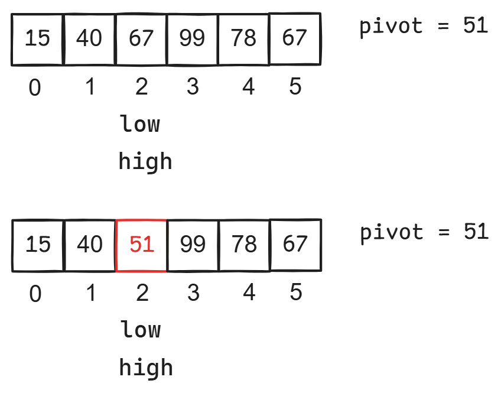
图7.5.1.8
到此第一轮快速排序完成，枢轴元素的最终位置确定了，确定枢轴元素位置的代码如下：
xxxxxxxxxx//划分序列函数，low是待划分序列的起始下标，high是待划分序列的结束下标int Divide(int low,int high,int R[]){ //将R数组中第一个元素也就是low指向的元素作为枢轴元素 int pivot = R[low]; //外层while循环控制high和low交替移动,控制一趟快速排序 //一趟快速排序完成之后可以确定枢轴元素的最终位置 while(low < high){ //如果high指向的元素大于等于枢轴，则high向左移动1位 /*这里一定要加上low<high，因为当low==high时枢轴元素的 位置就确定了，high需要停止移动*/ while(R[high]>=pivot && low<high){ high--; } //如果high指向的元素小于枢轴，则将high指向的元素复制到low指向的位置 R[low] = R[high]; //如果low指向的元素小于等于枢轴，则low向右移动1位 /*这里一定要加上low<high，因为当low==high时枢轴元素的 位置就确定了，low需要停止移动*/ while(R[low]<=pivot&&low<high){ low++; } //low指向的元素大于枢轴则将low指向的元素复制到high指向的位置。 R[high] = R[low]; } //当low==high说明枢轴元素的位置确定了，外层while循环结束 //在low指向位置插入枢轴元素 R[low] = pivot; //返回枢轴元素的最终下标 return low;}接下来继续划分枢轴51左边的序列，将15作为枢轴，划分之后的结果如下：
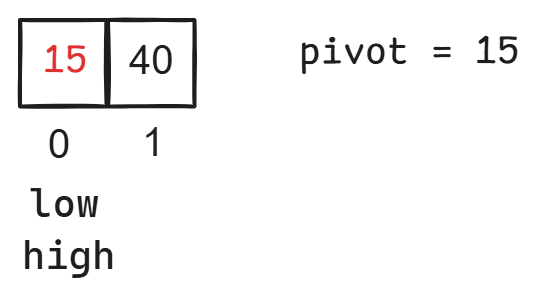
图7.5.1.9
接下来继续划分枢轴51右边的序列，将99作为枢轴，划分之后的结果如下：
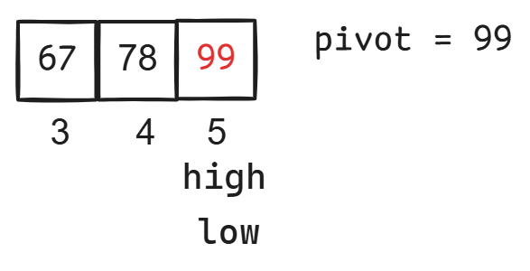
图7.5.1.10
7.5.2 使用递归完成快速排序
图7.5.2.1
如图7.5.2.1所示，low = 0，high = 5，将第一个元素51作为枢轴元素，通过划分操作，将原序列划分成两部分，左边的部分小于等于枢轴，右边的部分大于等于枢轴，接下来需要通过递归函数继续划分枢轴元素左边的序列，枢轴51左边的序列low = 0，high = 枢轴元素下标-1，枢轴51右边的序列low = 枢轴元素下标+1，high = 5，使用递归完成快速排序的代码如下：
xxxxxxxxxx//定义快速排序函数,low是待划分序列第一个元素的下标//high是待划分序列最后一个元素的下标void QuickSort(int R[],int low,int high){ //如果low等于high，说明只有1个元素不需要划分 //如果low大于high，说明没有元素不需要划分 if(low<high){ //划分序列[low,high]，返回枢轴元素的最终下标 int i = Divide(low,high,R); //递归调用QuickSort函数，划分枢轴元素左边的序列 QuickSort(R,low,i-1); //递归调用QuickSort函数，划分枢轴元素右边的序列 QuickSort(R,i+1,high); } }使用快速排序给序列{51,40,67,99,78,15}排序，递归执行流程如下图所示：
图7.5.2.2
7.6 选择排序
7.6.1 选择排序的思想
图7.6.1.1是一个数组，使用选择排序按照从小到大排序，每轮排序都在待排序序列中选取一个最小的元素放在最前面，每轮都会确定1个元素的位置，如果有n个元素，需要进行n - 1轮排序。用红色表示有序序列中的元素，也就是已经确定位置的元素。
图7.6.1.1
第一轮排序，待排序序列为{51,40,67,99,78,15}，选取待排序序列中的最小值15，将15与第一个元素51互换位置，此时15添加到有序序列中，15的位置就确定了，待排序序列变为{40,67,99,78,51}。
图7.6.1.2
第二轮排序，待排序序列为{40,67,99,78,51}，选取待排序序列中的最小值40，因为40位于待排序序列中第一个位置，因此无需和别的元素互换位置，将40添加到有序序列中，40的位置就确定了，待排序序列变为{67,99,78,51}。
图7.6.1.3
第三轮排序，待排序序列为{67,99,78,51}，选取待排序序列中的最小值51，将51与67互换位置，将51添加到有序序列中，51的位置就确定了，待排序序列变为{99,78,67}。
图7.6.1.4
第四轮排序，待排序序列为{99,78,67}，选取待排序序列中的最小值67，将67与99互换位置，将67添加到有序序列中，67的位置就确定了，待排序序列变为{78,99}。
图7.6.1.5
第五轮排序，待排序序列为{78,99}，选取待排序序列中的最小值78，因为78位于待排序序列中第一个位置，因此无需和别的元素互换位置，将78添加到有序序列中，78的位置就确定了，待排序序列变为{99}。当待排序序列中只剩一个元素时，选择排序就结束了，因为一个元素肯定有序。
图7.6.1.6
7.6.2 选择排序的实现
定义变量i控制选择排序的轮次，假设待排序序列中元素个数等于n，则总共需要进行n-1轮排序，最外层的for循环需要循环n-1次。代码如下：
xxxxxxxxxxfor(i=0;i<n-1;i++){}图7.6.1.1中的数组总共有6个元素，总共需要进行5轮排序，for(i=0;i<5;i++) i = 0，1，2，3，4。每轮排序，i都指向待排序序列中第一个元素。
定义变量min用来记录待排序序列中最小值的下标，min的初始值等于i，初始情况下，min指向待排序序列中第一个元素。将待排序序列中第一个元素看作最小值。
对图7.6.1.1中的数组进行排序，第一轮排序，待排序序列为{51,40,67,99,78,15}，i指向待排序序列中第一个元素51，j用来表示待排序序列中元素的下标。j初始情况下指向待排序序列中第二个元素40， j = i+1，初始情况下min指向待排序序列中第一个元素，如图7.6.2.1所示。j向右移动，遍历待排序序列中第二个元素到最后一个元素，也就是遍历下标j到下标n-1的元素，如果发现 j 指向的元素的值小于min指向的元素的值，则min = j，每一轮排序结束之后，min就指向待排序序列中的最小值。
如图7.6.2.1，j = 1，arr[ j ] = 40，arr[ j ] < arr[min]，min = j，min = 1。
图7.6.2.1
如图7.6.2.2，j = 2，arr[ j ] = 67，arr[ j ] > arr[min]，min的值不需要修改。
图7.6.2.2
如图7.6.2.3，j = 3，arr[ j ] = 99，arr[ j ] > arr[min]，min的值不需要修改。
图7.6.2.3
如图7.6.2.4，j = 4，arr[ j ] = 78，arr[ j ] > arr[min]，min的值不需要修改。
图7.6.2.4
如图7.6.2.5，j = 5，arr[ j ] = 15，arr[ j ] < arr[min], min = j，min = 5，min指向待排序序列中的最小值。
图7.6.2.5
接下来将下标为0的元素与下标为5的元素交换，也就是将待排序序列中第一个元素与min指向的元素交换位置。i指向待排序序列中第一个元素。
图7.6.2.6
选择排序的代码如下：
xxxxxxxxxxvoid selectSort(int n,int arr[]){ int min,i,j,temp; //外层for循环控制选择排序的轮次，总共需要n-1轮排序，n是数组arr元素的个数 for(i=0;i<n-1;i++){ //min的初始值等于i，初始情况下min指向待排序序列中第一个元素 //将待排序序列中第一个元素看成最小值 //i指向待排序序列中第一个元素 min = i; /*遍历待排序序列中第二个元素到最后一个元素，如果如果发现 j 指向的元素的值小于min指向的元素的值，则min = j，每一轮排序结束之后，min就指向待排序序列中的最小值。待排序序列中第二个元素的下标为i+1*/ for(j=i+1;j<n;j++){ if(arr[j]<arr[min]){ min = j; } } //代码执行到这里，min指向待排序序列中的最小值 //也就是将待排序序列中第一个元素与min指向的元素交换位置。 //将i指向的元素与min指向的元素交换位置。 temp = arr[i]; arr[i] = arr[min]; arr[min] = temp; }}
int main(){ int arr[] ={51,40,67,99,78,15}; int len = sizeof(arr) / sizeof(int); selectSort(len,arr); for(int i=0;i < len;i++){ printf("%d ",arr[i]); } return 0;}7.7 堆排序
7.7.1 堆的创建
堆是一棵特殊的完全二叉树，堆分为大根堆和小根堆，在大根堆中，所有的根结点的值都大于等于左右孩子的值，在小根堆中，所有的根结点的值都小于等于左右孩子的值。堆通常使用数组来存储，数组下标从0开始，如果堆中根结点的下标为i，则根结点的左孩子的下标为2i+1，则根结点的右孩子的下标为2i+2，图7.7.1.1是大根堆和小根堆。
图7.7.1.1
待排序序列为{51,40,67,99,78,15}，使用完全二叉树来表示这个序列，这个序列对应的完全二叉树如图7.7.1.2所示，在这个完全二叉树中，叶子结点是99 78 15，这3个结点没有左右孩子不需要调整，只需要对非叶子结点进行调整。按照从后往前的顺序对非叶子结点以及非叶子结点的左右孩子进行调整，调整顺序为67 40 51。需要判断这3个结点和结点的孩子是否满足大根堆的定义，如果不满足就需要调整。
图7.7.1.2
（1）因为67>15，满足大根堆的定义，不需要进行调整。 （2）因为40<99 40<78，不满足大根堆的定义，需要进行调整。需要将40与较大的孩子99互换，40是下坠元素，下坠元素40是叶子结点，不需要调整。如图7.7.1.3所示。
图7.7.1.3
（3）此时51<99 51<67，不满足大根堆的定义，需要进行调整。需要 将51和较大的孩子99互换，51是下坠元素，如图7.7.1.4所示。
图7.7.1.4
需要继续判断下坠元素51和51的孩子是否满足大根堆的定义，如果不满足大根堆定义需要进行调整。 （4）此时51>40 51<78，不满足大根堆的定义，需要进行调整。需要 将51和较大的孩子78互换，51是下坠元素，如图7.7.1.5所示。此时下坠元素51是叶子结点，不需要调整。
图7.7.1.5
调整为大根堆后的序列为{99,78,67,40,51,15}。
将1个序列调整为大根堆的代码如下所示：
xxxxxxxxxx//将i结点和i结点的孩子调整为大根堆，n是堆中元素的个数//i是堆中非叶子结点的下标void AdjustHeap(int i,int n,int R[]){ int temp,max; //获取结点i的左孩子的下标 int left = 2*i+1; //获取结点i的右孩子的下标 int right = 2*i+2; //查找非叶子结点的左右孩子中的最大值 //如果左孩子大于等于右孩子，则左右孩子中的最大值是左孩子 if(left<n && right<n && R[left]>=R[right]){ max = left; } //如果右孩子大于左孩子，则左右孩子中的最大值是右孩子 if(left<n && right<n && R[left]<R[right]){ max = right; } //如果结点i没有右孩子只有左孩子，则左右孩子中的最大值是左孩子 //没有右孩子则right肯定越界 if(left<n && right>=n){ max = left; } //程序执行到这里max保存的是左右孩子中的最大值 //如果R[max] > R[i],则不符合大根堆定义需要将R[max]与R[i]互换 if(R[max] > R[i]){ temp = R[max]; R[max] = R[i]; R[i] = temp; /*程序执行到这里，max指向下坠元素，如果下坠元素是非叶子结点，需要继续判断下坠元素以及下坠元素的左右孩子是否满足大根堆的定义,如果不满足就需要调整，堆中的非叶子结点是指存在左孩子的结点，左孩子存在则左孩子下标一定不越界*/ //如果下坠元素的左孩子存在，则说明下坠元素max是非叶子结点 if(2*max+1<n){ AdjustHeap(max,n,R); } } }//创建大根堆void CreateHeap(int R[],int n){ //i是堆中非叶子结点的下标 int i; /*从后往前遍历堆中所有的非叶子结点，将堆中非叶子结点以及 非叶子结点的左右孩子调整为大根堆，堆中最后1个非叶子结点的下标是 n/2-1，下面for循环中循环次数等于堆中非叶子结点的个数。 */ for(i = n/2-1;i >= 0;i--){ AdjustHeap(i,n,R); } }int main(){ int R[] ={51,40,67,99,78,15}; int len = sizeof(R) / sizeof(int); //创建大根堆 CreateHeap(R,len); //遍历大根堆 for(int i=0;i < len;i++){ printf("%d ",R[i]); } return 0;}堆是一个特殊的完全二叉树，完全二叉树最下面一行上面的部分是一个满二叉树，最下面一行的叶子结点从左到右是连续的，也就是说不会出现只有右孩子没有左孩子的结点。存在只有左孩子但是没有右孩子的结点。如图7.7.2.1所示。
图7.7.2.1
如果非叶子结点以及非叶子结点的左右孩子不满足大根堆的定义时就需要进行调整，调整时需要先找到非叶子结点的左右孩子的最大值，查找左右孩子的最大值需要分三种情况：（1）非叶子结点的左右孩子都存在，左孩子大于等于右孩子，则最大值是左孩子。如图7.7.2.2所示，因为R[left] >R[right]，所以max = left。max表示左右孩子中最大值的下标。
图7.7.2.2
（2）非叶子结点的左右孩子都存在，右孩子大于左孩子，则最大值是右孩子。如图7.7.2.3所示，因为R[right] >R[left]，所以max = right。max表示左右孩子中最大值的下标。

图7.7.2.3
（3）非叶子结点的左孩子存在右孩子不存在，则最大值是左孩子。如图7.7.2.4所示，max = left。max表示左右孩子中最大值的下标。
图7.7.2.4
如果非叶子结点的值小于非叶子结点左右孩子中的最大值，则说明不符合大根堆的定义，将非叶子结点的值与非叶子结点左右孩子中的最大值互换，也就是将R[i]与R[max]互换。如图7.7.2.5所示，将非叶子结点51与非叶子结点左右孩子中的最大值78互换。此时max指向下坠元素51，因为下坠元素51是叶子结点，叶子结点没有左右孩子，不需要递归调用AdjustHeap(max,n,R)函数。
图7.7.2.5
如果下坠元素是非叶子结点，下坠元素以及下坠元素的左右孩子有可能不符合大根堆的定义，如图7.7.2.6所示，51与99互换位置之后，51成为下坠元素，下坠元素51是非叶子结点，需要递归调用AdjustHeap(max,n,R)函数判断是否需要调整。堆中的非叶子结点是指有左孩子的结点，如果下坠元素的左孩子存在，则说明下坠元素是非叶子结点。max是下坠元素的下标，则下坠元素左孩子下标等于2 * max+1，如果2* max+1没有越界，则说明下坠元素的左孩子存在，下坠元素是非叶子结点。
图7.7.2.6
7.7.2 堆排序的实现
如何进行堆排序？需要先将一个无序序列创建成大根堆，在大根堆中，堆顶元素就是堆中下标为0的元素，堆底元素是堆中最后1个元素，堆底元素下标为n-1，n是堆中元素的个数。堆顶元素的值是最大值。n个元素需要进行n-1轮排序，每一轮排序将堆顶元素与堆底元素互换，互换之后将堆底元素从堆中删除，从后往前遍历堆中的非叶子结点，将堆重新调整为一个大根堆 。
图7.7.2.7
图7.7.2.7是一个大根堆，通过这个大根堆进行堆排序。图中99是堆顶元素，15是堆底元素。 第一轮排序：i=5，i指向15，将堆顶元素99与堆底元素15互换位置，99在数组中的位置就确定了。i指向99，然后将堆底元素99从堆中删除，此时堆中元素的个数等于i，99的下标用i表示，i = 5，则堆中最后一个非叶子结点的下标是（i -2）/2 =1。将堆中非叶子结点以及非叶子结点的左右孩子调整为大根堆。
图7.7.2.8
第二轮排序：i = 4，i指向15，将堆顶元素78与堆底元素15互换位置，78在数组中的位置就确定了，i指向78，然后将堆底元素78从堆中删除，此时堆中元素的个数等于i，78的下标用i表示，i = 4，则堆中最后一个非叶子结点的下标是（i -2）/2 =1。将堆中非叶子结点以及非叶子结点的左右孩子调整为大根堆。
图7.7.2.9
第三轮排序：i = 3，i指向40，将堆顶元素67与堆底元素40互换位置，67在数组中的位置就确定了，i指向67，然后将堆底元素67从堆中删除，此时堆中元素的个数等于i，67的下标用i表示，i = 3，则堆中最后一个非叶子结点的下标是（i -2）/2 =0。将堆中非叶子结点以及非叶子结点的左右孩子调整为大根堆。
图7.7.2.10
第四轮排序：i = 2，i指向15，将堆顶元素51与堆底元素15互换位置，51在数组中的位置就确定了，i指向51，然后将堆底元素51从堆中删除，此时堆中元素的个数等于i，51的下标用i表示，i = 2，则堆中最后一个非叶子结点的下标是（i -2）/2 =0。将堆中非叶子结点以及非叶子结点的左右孩子调整为大根堆。
图7.7.2.11
第五轮排序：i = 1，i指向15，将堆顶元素40与堆底元素15互换位置，40在数组中的位置就确定了，i指向40，然后将堆底元素40从堆中删除，此时堆中元素的个数等于i，此时堆中剩下1个元素15，15在数组中的位置就确定了，15在下标0的位置。
图7.7.2.12
堆排序的代码如下：
xxxxxxxxxx//创建大根堆，使用大根堆进行堆排序void HeapSort(int R[],int n){ //i是堆中非叶子结点的下标 int i; int j; int temp; /*从后往前遍历堆中所有的非叶子结点，将堆中非叶子结点以及 非叶子结点的左右孩子调整为大根堆，堆中最后1个非叶子结点的下标是 n/2-1，下面for循环中循环次数等于堆中非叶子结点的个数。 */ for(i = n/2-1;i >= 0;i--){ AdjustHeap(i,n,R); } //每轮for循环将堆中最后1个元素与堆顶元素互换， for(i = n-1;i >= 0;i--){ temp = R[i]; R[i] = R[0]; R[0] = temp; //此时堆中最后1个非叶子结点的下标是(i-2)/2 //从后往前遍历堆中的非叶子结点，将非叶子结点以及左右孩子调整为大根堆。 for(j=(i-2)/2;j>=0;j--){ //i是此时堆中元素的个数 AdjustHeap(j,i,R); } } }
int main(){ int R[] ={10,9,8,7,6,5,4,3,2,1}; int len = sizeof(R) / sizeof(int); //创建大根堆，并使用大根堆进行堆排序 HeapSort(R,len); //遍历数组R，验证堆排序的结果 for(int i=0;i < len;i++){ printf("%d ",R[i]); } return 0;}7.8 归并排序
7.8.1 将两个相邻的有序序列合并成1个序列
归并排序是指将两个相邻的有序序列合并成1个有序序列。相邻的有序序列指的是两个序列中的元素在下标上是连续的，下面通过1个例子讲解如何将两个相邻的有序序列合并成1个有序序列。
在数组R中有两个相邻的有序序列{19,27,40,48}和{24,26,36}。low指向序列{19,27,40,48}中的第一个元素，mid指向序列{19,27,40,48}中的最后1个元素，mid+1指向序列{24,26,36}中的第一个元素，high指向序列{24,26,36}中的最后1个元素。将这两个有序序列合并成1个有序序列。将数组R中的元素复制到数组arr中，arr是辅助数组。定义变量i指向数组arr中序列{19,27,40,48}中的元素，定义变量j指向数组arr中序列{24,26,36}中的元素，初始情况下，i指向序列{19,27,40,48}中的第一个元素，j指向序列{24,26,36}中的第一个元素，比较i和j所指的元素，选择更小的一个存入数组R中下标k的位置。如图7.8.1.1所示。其中i<=mid，j<=high。定义变量k指向数组R中的元素，初始情况下k = low。
图7.8.1.1
第一轮：i = 3，i指向19，j = 7，j指向24，k = 3，因为19<24，将19放入R数组中下标k的位置，k++，k=4。i++，i = 4。
图7.8.1.2
第二轮：i = 4，i指向27，j = 7，j指向24，k = 4，因为24<27，将24放入R数组中下标k的位置，k++，k=5。j++，j = 8。
图7.8.1.3
第三轮：i = 4，i指向27，j = 8，j指向26，k = 5，因为26<27，将26放入R数组中下标k的位置，k++，k=6。j++，j = 9。
图7.8.1.4
第四轮：i = 4，i指向27，j = 9，j指向36，k = 6，因为27<36，将27放入R数组中下标k的位置，k++，k=7。i++，i = 5。
图7.8.1.5
第五轮：i = 5，i指向40，j = 9，j指向36，k = 7，因为36<40，将36放入R数组中下标k的位置，k++，k=8。j++，j = 10，j的值越界了，说明序列{24，26，36}已经添加到数组R中。
图7.8.1.6
第六轮：i = 5，i指向40，k = 8，将序列{19,27,40,48}中下标i开始的元素全部添加到数组R中，也就是将元素40，48添加到数组R中。将40添加到下标k的位置，k++，k = 9，在下标k的位置添加元素48，到此有序序列{19,27,40,48}和{24,26,36}合并完成。
xxxxxxxxxx图7.8.1.7
将两个相邻的有序序列合并成1个有序序列的代码如下：
xxxxxxxxxx//定义辅助数组arrint arr[100];//将相邻的有序序列[low...mid]和[mid+1...high]合并成一个有序序列//相邻的序列[low...mid]和[mid+1...high]都存储在数组R中void merge(int R[],int low,int high,int mid){ //定义变量k指向数组R中的元素，下标k的初始值等于low。 int k = low; //将序列[low...high]中的元素复制到辅助数组arr中 for(int m=low;m<=high;m++){ arr[m] = R[m]; } //i指向序列[low...mid]中的第一个元素，第一个元素的下标是low int i = low; //j指向序列[mid+1...high]中的第一个元素，第一个元素的下标是mid+1 int j = mid+1; //比较i和j所指的元素，选择更小的一个存入数组R中下标k的位置。 while(i<=mid&&j<=high){ if(arr[i]<=arr[j]){ //如果i指向的元素值较小，则将i指向的元素复制到数组R中 //k和i指向下一个位置 R[k] = arr[i]; k++; i++; //如果j指向的元素值较小，则将j指向的元素复制到数组R中 //k和j指向下一个位置 }else{ R[k] = arr[j]; k++; j++; } } /*程序执行到这里说明i或者j越界了，此时两个相邻的序列中有1个序列已经添加到数组R中，将另外一个序列中未添加到数组R中的元素全部添加到数组R中也就是将i或者j开始的元素全部添加到数组R中*/ /*如果i的值没有越界，说明arr数组中下标i到下标mid的元素没有添加到数组R中，将下标i到下标mid的元素添加到数组R中。*/ while(i<=mid){ R[k]=arr[i]; k++; i++; } /*如果j的值没有越界，说明arr数组中下标j到下标high的元素没有添加到数组R中，将下标j到下标high的元素添加到数组R中*/ while(j<=high){ R[k]=arr[j]; k++; j++; }}7.8.2 通过递归实现归并排序
下面通过1个例子讲解递归实现归并排序的过程。
对序列{51,40,67,99,78}进行归并排序，low = 0，high = 4，mid =(0+4)/2=2，以mid为界将原始序列拆分成左半部分{51,40,67}和右半部分{99,78}，如图7.8.2.1所示。
图7.8.2.1
1.（1）对序列{51,40,67}进行拆分，此时low =0，high =2，mid=（0+2)/2=1 以mid为界将序列{51,40,67}拆分成左半部分{51,40}和右半部分{67}。
图7.8.2.2
（2）对序列{51,40}进行拆分，此时low =0，high =1，mid =（0+1）/2=0，以mid为界将序列{51,40}拆分成左半部分{51}和右半部分{40}。
图7.8.2.3
（3）对有序序列{51}和{40}进行合并，合并后的结果为{40,51}
图7.8.2.4
（4）因为序列{67}只有1个元素不需要拆分，1个元素一定是有序的，然后将有序序列{40,51}和{67}进行合并，合并后的结果为{40,51,67}。
图7.8.2.5
2.（1）对序列{99,78}进行拆分，此时low =3，high =4，mid =（3+4）/2=3,以mid为界将序列{99,78}拆分成左半部分{99}和右半部分{78}。
图7.8.2.6
（2）对有序序列{99}和{78}进行合并，合并后的结果为{78,99}。
图7.8.2.7
3.（1）对有序序列{40,51,67}和有序序列{78,99}进行合并，合并后的结果为{40,51,67,78,99}。
图7.8.2.8
通过递归实现归并排序的代码如下：
xxxxxxxxxx//定义归并排序函数，该函数对序列[low...high]进行拆分void MergeSort(int low,int high,int R[]){ //如果low等于high说明序列中只有1个元素，1个元素不需要拆分递归结束 if(low<high){ //通过mid将序列[low...high]拆分成两个部分 int mid=(low+high)/2; //对[low...high]的左半部分也就是[low...mid]进行拆分 MergeSort(low,mid,R); //对[low...high]的右半部分也就是[mid+1...high]进行拆分 MergeSort(mid+1,high,R); //将序列[low...mid]和[mid+1...high]进行合并 merge(R,low,high,mid); }}int main(){ int R[] ={80,70,60,50,40,30}; int len = sizeof(R) / sizeof(int); MergeSort(0,len-1,R); //遍历数组R for(int i=0;i < len;i++){ printf("%d ",R[i]); } return 0;}图7.8.2.9讲解了以上递归代码的执行过程。
图7.8.2.9
7.9 基数排序
7.9.1 基数排序的思想
基数排序是非比较型排序算法，它的基本思想为：创建10个队列，这10个队列的编号从0到9，待排序序列中元素的最大位数决定了需要进行几轮分配与收集，如果待排序序列中元素的最大位数是3，则需要进行三轮分配与收集。 如果待排序序列中元素的最大位数是4，则需要进行四轮分配与收集。下面通过1个例子讲解具体的执行过程。基数是指队列的数量，十进制数使用基数排序需要10个队列，因此基数是10。
待排序序列：109,069,930,589,184,505,268,008,083,163。执行基数排序之前需要先定义1个单链表，将待排序序列中的元素全部存入单链表，单链表的创建使用尾插法。定义头指针head指向单链表中第一个结点，定义尾指针rail指向单链表中最后1个结点，初始情况下单链表为空，head和rail都指向NULL，创建1个新结点存储109，head和rail都指向109。
图7.9.1.1
创建第二个结点存储63，将结点109的next指针指向63，将尾指针指向63。
图7.9.1.2
然后依次创建后面的结点，最后1个结点163创建完成之后，要将163的next指针指向NULL。
图7.9.1.3
使用尾插法创建单链表的代码如下：
xxxxxxxxxx//定义链表结点typedef struct Node{ //数据域 int data; //指针域 struct Node *next;}Node;
//通过尾插法创建单链表，n是R数组中元素个数Node* createList(int R[],int n){ //初始情况下head和rear都指向NULL //head是头指针指向第一个结点，rear是尾指针指向最后1个结点 Node* head = NULL; Node* rear = NULL; //通过for循环创建n个结点，将R数组中的元素添加到链表中 for(int i=0;i<n;i++){ //如果head为NULL,说明此时单链表为空 if(head==NULL){ //创建链表中第一个结点 Node* temp = new Node; temp->data = R[i]; //head和rear都指向链表中第一个结点 head = temp; rear = temp; //如果head不为NULL,说明此时单链表不为空 }else{ //创建新结点（不是第一个结点） Node* temp = new Node; temp->data = R[i]; //rear指向的结点的next指针指向新创建的结点temp rear->next = temp; //rear指针移动，rear指向最后1个元素 rear = temp; } } //for循环结束，n个结点创建完成，将最后1个结点的next指针指向NULL rear->next = NULL; //返回创建好的单链表的头指针 return head;}
将待排序序列中的元素分配到队列中，需要创建10个队列，这10个队列是0号队列到9号队列。这10个队列是链式队列，每个队列都有1个队头指针和1个队尾指针，队头指针指向队头元素，队尾指针指向队尾元素，创建1个队头指针数组h[ ]存储这10个队列中所有的队头指针，创建1个队尾指针数组r[ ]存储这10个队列中所有的队尾指针，初始化之后的队列如图7.9.1.4所示，初始化之后，因为所有的队列都为空，此时队头指针和队尾指针都指向NULL。
图7.9.1.4
某个元素个位的值 = 元素的值%10，某个元素十位的值= 元素的值/10%10，某个元素百位的值= 元素的值/100%10，某个元素千位的值= 元素的值/1000%10。定义1个for循环，每循环1次b = b * 10，b的初始值等于1，某个元素个位的值 = 元素的值 / b%10。b = b * 10=10 ，某个元素十位的值= 元素的值 / b%10。b = b * 10=100 ，某个元素百位的值 = 元素的值 / b%10。b = b * 10=1000 ，某个元素千位的值 = 元素的值 / b%10。
用k表示h[ ]数组和r[ ]数组中元素的下标，k用来表示队列的编号，h[ k ]就是k号队列的队头指针，r[ k ]就是k号队列的队尾指针，待排序序列：109,069,930,589,184,505,268,008,083,163，待排序序列中的元素存放在单链表中。使用基数排序对这个序列进行排序。
第一轮分配：按照元素个位的值分配到相应的队列中，如果个位元素是5，则分配到5号队列，如果个位元素是2，则分配到2号队列中。因为109个位数字是9，将109存入9号队列，此时9号队列为空，将9号队列的队头指针和队尾指针都指向109，用k表示队列编号 k = 9，此时p指向109，则h[ k ] = p r[ k ] = p，如图7.9.1.5所示。
图7.9.1.5
因为069的个位数字是9，p指向069，将069存入9号队列，用k表示队列编号 k = 9，此时9号队列中已经有1个元素109，h[k]不为空，h[k]指向109，r[k]指向109，将109的next指针指向069，r[ k ]->next = p。9号队列的队尾指针r[ k ]指向069，r[ k ] = p。
图7.9.1.6
将待排序序列中的其它元素按照个位的值添加到队列中，如图7.9.1.7所示。
图7.9.1.7
第一轮收集：定义1个单链表用来收集10个队列中的元素，定义头指针p指向单链表中第一个元素，定义变量rear指向单链表中最后1个元素，初始情况下，单链表为空，p指向NULL，定义1个for循环用来收集10个队列中的元素，循环次数等于10次，因为总共有10个队列。第1轮for循环收集0号队列中的元素，令j = 0，将p指向0号队列中的队头元素，p = h[ j ]，p指向930，将rear指向0号队列中队尾元素930，rear = r[ j ]，0号队列收集完成之后，将0号队列的队头指针和队尾指针都指向NULL。
图7.9.1.8
第2轮for循环因为1号队列为空不需要收集元素，第3轮for循环因为2号队列为空不需要收集元素，第4轮for循环，令j = 3，此时rear指向930，将930的next指针指向3号队列的队头元素083，rear->next = h[ j ]，rear指向3号队列的队尾元素163，rear = r[ j ] 。rear指向单链表中最后1个元素。3号队列收集完成之后，将3号队列的队头指针和队尾指针都指向NULL。
图7.9.1.9
4号到9号队列元素的收集方法同上。每一轮收集都将当前链表中的最后1个元素的next指针指向队头元素，将rear指向队尾元素，队列中的元素都收集到单链表中，如图7.9.1.10所示。
图7.9.1.10
当队列中的元素都收集到链表中，此时需要将链表中最后1个结点的next指针指向NULL，rear->next = NULL。到此链表中的数据个位有序了。
第二轮分配：将单链表中的元素按照元素十位的值分配到相应的队列中，如果某个元素十位的值是3，则将该元素分配到3号队列中，如果某个元素十位的值是5，则将该元素分配到5号队列中，分配结果如图7.9.1.11所示。
图7.9.1.11
第二轮收集：将0号队列到9号队列中的元素添加到链表中。如图7.9.1.12所示。到此链表中的数据个位和十位有序了。
图7.9.1.12
第三轮分配：将单链表中的元素按照元素百位的值分配到相应的队列中，如果某个元素百位的值是3，则将该元素分配到3号队列中，如果某个元素百位的值是5，则将该元素分配到5号队列中，分配结果如图7.9.1.13所示。
图7.9.1.13
第三轮收集：将0号队列到9号队列中的元素收集到链表中。如图7.9.1.14所示。到此基数排序完成，链表中的数据按照从小到大排序。
图7.9.1.14
7.9.2 基数排序的实现
基数排序的代码如下：
xxxxxxxxxx//基数排序，p指向链表中第一个结点void radixSort(Node *&p){ int i,j,k; //rear指向链表中最后1个元素 Node* rear; //定义h[]数组存储0-9号队列中的队头指针 Node* h[MaxSize]; //定义r[]数组存储0-9号队列中的队尾指针 Node* r[MaxSize]; //0-9号队列为空，h数组和r数组中所有的元素都设置为NULL for(i=0;i<10;i++){ h[i] = NULL; r[i] = NULL; } //将链表中的元素分配到相应的队列中 //定义for循环，for循环次数等于元素的位数bit //如果元素的位数bit等于3，则需要进行三轮分配与收集 //b用来计算元素个位,十位,百位,千位的值... int b = 1; for(i=1;i<=bit;i++){ //遍历单链表，将链表中的元素分配到相应的队列中 while(p!=NULL){ //获取p指向的元素的值 int data = p->data; //计算元素某一位的值（计算个位,十位,百位,千位的值...） //将元素放入k号队列 k = data / b%10; //如果队列为空,分配到队列中的元素是队列中的第一个元素 if(h[k]==NULL){ //将队头指针和队尾指针都指向队列中的第一个元素 h[k] = p; r[k] = p; //如果队列不为空 }else{ //在队尾元素后面插入新的元素p r[k]->next = p; //队尾指针指向新插入的结点p r[k] = p; } p = p->next; } //遍历0-9号队列，将队列中的元素收集到链表中 for(j=0;j<10;j++){ //如果j号队列不为空才需要收集 if(h[j]!=NULL){ //如果头指针p等于NULL说明单链表为空。 if(p==NULL){ //p指向j号队列中的队头元素 p = h[j]; //rear指向j号队列中的队尾元素 //rear指向链表中最后1个元素 rear = r[j]; //如果p不等于NULL说明单链表不为空 }else{ //链表最后1个元素的next指针指向j号队列的队头元素 rear->next = h[j]; //链表的尾指针rear指向j号队列的队尾元素 rear = r[j]; } //j号队列中的元素已经收集到链表中，将j号队列清空 h[j] = NULL; r[j] = NULL; } } //队列中的元素收集到链表中，将链表最后1个结点的next指针指向NULL rear->next = NULL; //外层for循环每循环1次b = b * 10，为下一轮分配与收集做准备 b = b * 10; } }
int main(){ int R[] ={390,360,320,330,560}; int len = sizeof(R) / sizeof(int); //p指向第一个结点，p是链表的头指针 Node * p = createList(R,len); radixSort(p); while(p!=NULL){ printf("%d ",p->data); p = p->next; } return 0;}